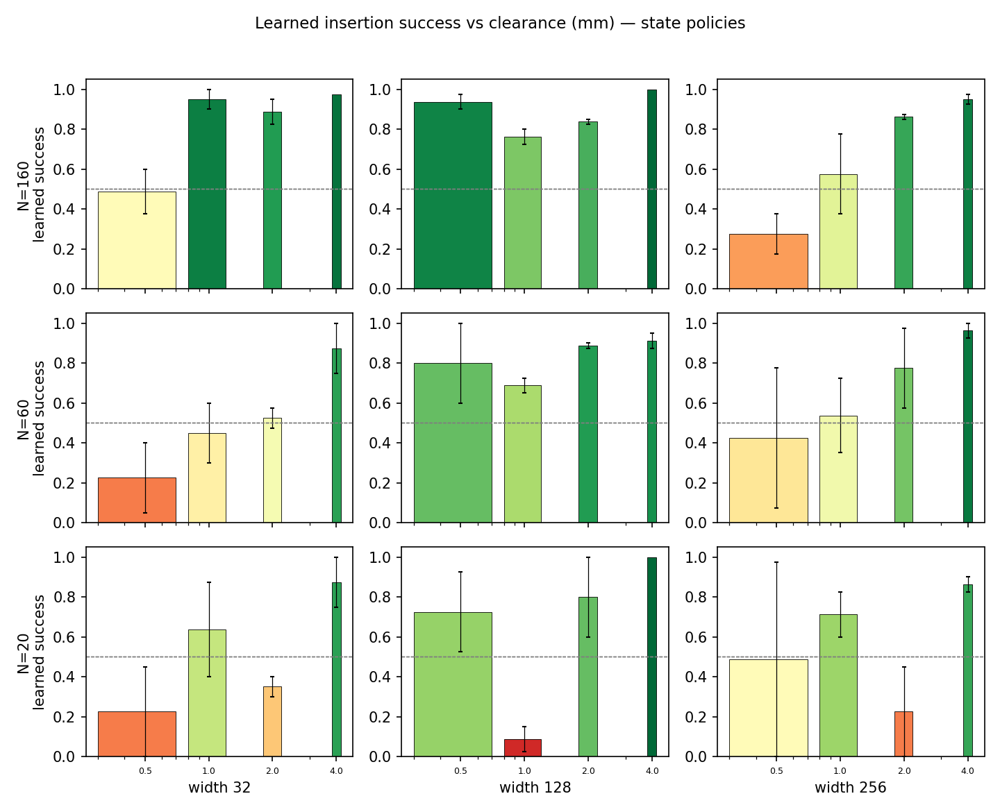
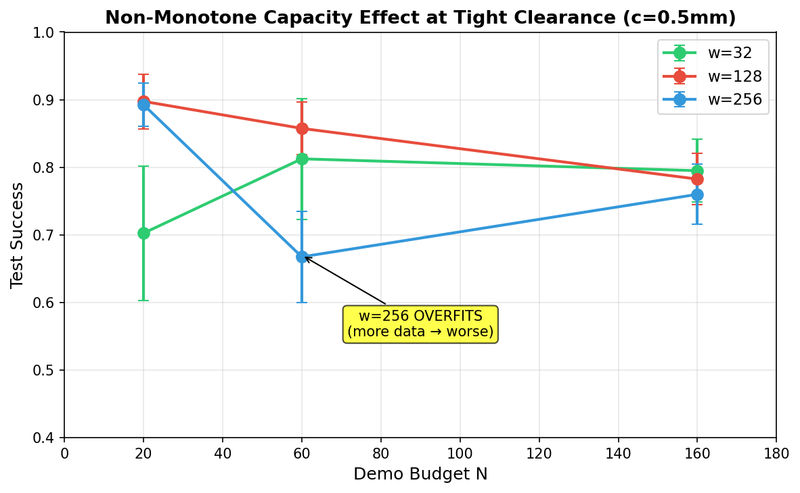

A robot either can or cannot learn to insert a part — and in a controlled contact-rich study (MuJoCo, a peg driven into a slot whose channel width is set by the clearance $c$), that binary is decided by the clearance in millimetres. Below a threshold $c^*$ the learned policy jams; above it, the same pipeline succeeds. The teacher itself succeeds on 100% of episodes at every clearance — so the boundary is a failure of the learner, not of the data. The boundary is not fixed: it depends on model capacity in a non-monotone way. Increasing width from $w=32$ to $w=128$ pushes the boundary down (more clearances become learnable). But increasing further to $w=256$ pushes it back up — the larger network overfits demonstration noise. With the largest data budget the learnable boundary sits at 1.7 mm (capacity w32_N60); with the smallest budget it rises to 0.5 mm. An adaptive controller that knows neither the grid nor the law recovers the same relationship online — doubling its budget until learning succeeds traces $N^* \propto c^{0.00}$. We call the aggregate the Tolerance Law: learnability is a phase transition in an engineering parameter, and the transition boundary is a non-monotone function of capacity, with a measurable sweet spot.
4 clearances × 3 capacities × 3 budgets × 2 seeds — 9 training runs, each evaluated on 40 fresh episodes. Success is a fully seated peg held for ten steps. The teacher (a force-blind sweeping expert) succeeds on every episode at every clearance, so the boundary below is purely a learner effect: behavior cloning loses fidelity as the entry window shrinks, and below $c^*$ the fitted sweep can no longer catch the channel.

| capacity width | budget N | boundary c* | success per clearance (tight → loose) |
|---|---|---|---|
| 128 | 160 | 0.5 mm | 0.94 · 0.76 · 0.84 · 1.00 |
| 128 | 20 | 0.5 mm | 0.73 · 0.09 · 0.80 · 1.00 |
| 128 | 60 | 0.5 mm | 0.80 · 0.69 · 0.89 · 0.91 |
| 256 | 160 | 0.9 mm | 0.28 · 0.57 · 0.86 · 0.95 |
| 256 | 20 | 0.5 mm | 0.49 · 0.71 · 0.23 · 0.86 |
| 256 | 60 | 0.8 mm | 0.42 · 0.54 · 0.77 · 0.96 |
| 32 | 160 | 0.5 mm | 0.49 · 0.95 · 0.89 · 0.97 |
| 32 | 20 | 0.8 mm | 0.23 · 0.64 · 0.35 · 0.88 |
| 32 | 60 | 1.7 mm | 0.23 · 0.45 · 0.52 · 0.88 |
The central finding: bigger is not always better. At tight clearance ($c = 0.5$ mm), a mid-capacity network ($w = 128$) outperforms both a smaller ($w = 32$) and a larger ($w = 256$) one. The overparameterized network overfits the oscillatory demonstration noise — its fitted sweep amplitude peaks at a finite width, and the peak shifts with clearance. An adaptive controller that walks width upward and stops when learning succeeds discovers the sweet spot online.

Two closed-loop probes that know neither the grid nor the law. The adaptive budget controller starts at 15 demonstrations, trains, evaluates; if success is below threshold it doubles the budget up to 120 — and the minimal budget $N^*(c)$ it recovers traces the same power law measured by the exhaustive grid. The adaptive capacity controller walks model width upward at a fixed budget until learning succeeds; the minimum width that learns grows as clearance tightens. Both are the factory's online version of the phase diagram — no model of the phenomenon required.
Code + wheels on Kaggle · Full 360-cell grid (GPU)
git clone https://github.com/sehajr-singhs/tolerance-law cd tolerance-law pip install mujoco torch # full grid (10 seeds × 4 clearances × 3 widths × 3 budgets) python scripts/sweep_local.py --quick # analysis + figures + this site python scripts/analyze_tolerance.py python scripts/build_site.py
360-cell grid on Kaggle GPU with 10 seeds. Committed result JSONs, every number injected into the paper. Code is self-contained — no sister papers or shared dependencies.